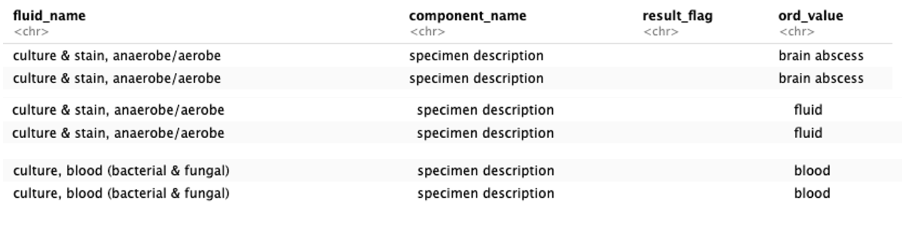

Introduction
This guide provides detailed steps on how to construct the CLIF microbiology table using EHR data.
Desired CLIF Table Structure
- encounter_id
- test_id: For one component (e.g., gram culture smear) for a given fluid with a unique order and collection time. If two pathogens are identified, this yields two rows with the same test_id.
- organism_id: For one culture for a given fluid with a unique order and collection time, linked to a separate sensitivity table. If two pathogens are identified, this yields two rows with the same culture_id.
- order_dttm
- collect_dttm
- result_dttm
- fluid_name
- fluid_category (Defined by NIH CDE)
- organism_name
- organism_category (Defined by NIH CDE)
Documents to facilitate cleaning data
- CDE NIH Organism: List of categorized organism names defined by NIH.
- clif_vocab_microbiology_organism_ucmc.csv: Helps categorize organism name strings.
- CDE NIH Infection Site: List of categorized infectious fluid names defined by NIH.
- clif_vocab_microbiology_fluid_ucmc.csv: Identifies and categorizes infectious fluid names.
Step 1: Identify Fluid Names Ordering Infectious Studies
To begin cleaning your CLIF micro data, you first need to identify fluid names that order an infectious study. If your dataset contains all labs ordered at your site, you need to filter out those specific to infectious cultures. The clif_vocab_microbiology_fluid_ucmc table contains a list of infectious fluid names that map to the fluid category. Here’s how you can do it:
fluid_name_ontology <- read_excel("pathway") %>%
mutate(across(where(is.character), tolower)) %>%
filter(culture == 1) %>%
select(-culture)Next, check for other infectious orders that need to be included in your site’s fluid names:
Data %>%
filter(is.na(fluid_category)) %>%
distinct(fluid_names)Look at the table for any infectious fluid names that the micro_ontology table did not pick up. You will need to include these.
You can then either:
- Update the micro_ontology table and repeat the left bind.
- Use case_when(fluid_name == ____) then fluid category is ____.
Step 2: Reclassify Fluid Categories
Reclassify fluid_category == “other unspecified” into a more specific category using case_when or grepl. With this approach, about 30% of fluid names might be left bound to the fluid_category "other unspecified" because the fluid name does not contain any description of where the fluid originates from.
Reclassify these “other_unspecified” cultures into their correct fluid_category. At UoC, the fluid_description is a string typed in by the clinician in EPIC and is therefore the correct fluid_category.
In the below example, we reclassify fluid categories for brain and eyes:
# Reclassify fluid categories for brain
sipa_data.brain.pre <- sipa_data.v7 %>%
filter(fluid_category == "other unspecified" | fluid_category == "brain") %>%
mutate(fluid_category = case_when(component_name == "specimen description" & grepl("brain", ord_value, ignore.case = TRUE) ~ "brain",
TRUE ~ fluid_category)) %>%
ungroup()
# Reclassify fluid categories for eyes
sipa_data.eyes.pre <- sipa_data.v7 %>%
filter(fluid_category == "other unspecified" | fluid_category == "eyes") %>%
mutate(fluid_category = case_when(component_name == "specimen description" & grepl("conjunctival|conjunctivall|corneal|cornealEnsure that your reclassification is correct by checking for coherenc. Be careful with your grepl term because it is EXTREMELY easy to miscategorise fluids.
For instance, bladder could be gallbladderor urinary bladder
Data %>%
mutate(fluid_category = case_when(
str_detect(fluid_name, "bladder") ~ "urinary bladder",
TRUE ~ fluid_category
))After every grepl/case_when, you need to
Data %>%
filter(fluid_category == "fluid_category") %>%
distinct(fluid_names, fluid_category)Look at the table to see that the pairings are coherent.
Step 3: Create Component categories
The type of fluid name should be specified. There are three levels for this: Culture, Gram stain, and Smear.
Since there were few component names at UoC, an ontology table wasn’t created. Instead, you can use case_when to create a new column for component_category:
Data %>%
mutate(component_category = case_when(
str_detect(component_name, "gram stain") ~ "Gram stain",
str_detect(component_name, "smear") ~ "Smear",
TRUE ~ "Culture"
))Step 4: Categorize Organism Name Strings
Categorize organism name strings into organism_name and organism_category by left binding the clif_vocab_microbiology_organism_ucmc.csv table:
Data <- Data %>%
left_join(micro_name_ontology, by = "organism_string")Check for organism strings that did not get captured with the left bind:
Data %>%
filter(is.na(organism_category)) %>%
distinct(organism_string)Include any missing organism strings by either:
- Using case_when for specific strings.
- Updating the organism_name_ontology table manually and repeating the left bind.
For updating the organism name ontology table, you could also use the CLIF Assitant. You can feed CLIF assistant your strings. It can help you classify them into organism_names and organism_categories.
Step 5: Final Steps to Clean the Data
Create Test ID and Culture ID
A test_id is a unique number that identifies one patient, one infectious lab (fluid_name) collected at one time point, and its component_name.
A culture_id is a unique number that identifies one patient, one infectious lab (fluid_name) collected at one time point, and its component_name for a culture.
Potential additional steps
Whether or not you need to perform these additional steps depends on how many redundant string rows your dataset has
- Remove Duplicate Rows
- To remove duplicate rows, use the following R code:
distinct(encounter_id, order_dttm, collect_dttm, result_dttm, fluid_name, fluid_category, component_name, component_category, organism_name, organism_category, susceptibility_columns)- One organism collected from a patient, from one body fluid, at one time, growing one bug, with a set susceptibility pattern should take up one row
- If two different bugs grow from same culture, they take up two rows
- If two identical bugs grow with different susceptibility profile, they take up two rows
- Review additional rows of
No growth
- Example that no growth should be removed. The below screenshot is one culture. The
“no growth”of“no bacteroides fragilis group or clostridium perfringes isolated”comes from left bind. It is not appropriate given the culture actually grows pseudomonas.
- Example that no growth should be removed. The below screenshot is one culture. The
Other bacteria
- Example that other bacteria should be removed. We ultimately want one row showing the growth enterococcus and not
“other bacteria”
- Example that other bacteria should be removed. We ultimately want one row showing the growth enterococcus and not
Notes on CDE NIH Infection Site
| Category | Details |
|---|---|
| Catheter tip | Includes central venous catheter tips and pacemaker leads. |
| GI tract unspecified | Use only if it cannot be categorized into esophagus, stomach, small intestine, or large intestine. |
| Interpreted as a luminal GI source. | |
| Genito-urinary tract unspecified | Use for urine cultures. |
| Includes kidney, renal pelvis, ureters, and bladder. | |
| Use for stents, tissue, abscess, cysts, etc. | |
| Rash, pustules, or abscesses not typical of any of the above | Interpreted as a superficial skin pustular source. |
| Does not include deep abscesses (e.g., psoas abscess). | |
| Lower respiratory tract (lung) | Includes all respiratory samples such as tracheal samples, BAL, induced and normal sputum, TBBx, and lung abscesses. |
| Typically, fluids are not categorized as “respiratory tract unspecified”. | |
| Respiratory fluids are complicated to classify; use specimen_description to further classify fluid location (e.g., BAL vs sputum vs trach). | |
| Joints | Includes samples from within the joint (e.g., synovial, bursa). |
| Does not include overlying skin or muscle. | |
| Spinal cord | Does not include vertebral osteomyelitis, which falls under “bone cortex (osteomyelitis)”. |
| Wound site | Includes infected incisions. |
| Does not capture ulcers, as it is often unclear if the ulcer is skin-only vs muscle/fascia vs bone. |
Notes on the CDE Organism table
| Category | Details |
|---|---|
| Organism_name structure | Structured as “genus_species”. |
| If the species is not available, use “genus_sp”. | |
| Obligatory anaerobes | Check if the bacteria is an obligatory anaerobe. |
| Classified into “anaerobic bacteria (nos, except for bacteroides, clostridium)”. | |
| Gram +/- without genus/species | For strings of “gram +/- without genus/species”, use the corresponding categories for fluid_cat. |
| Apply that category in fluid_name as well. |
Common Problems Encountered
Describing Organisms:
- There are tens of thousands of strings to describe organisms (e.g., 100,000 CFU E coli, Esch. Coli, E.Coli, etc.).
- Use ontology tables to left_bind and map out organism strings to “organism_name” (genus_species) and “organism_category” (as determined by NIH CDE).
- For instance, this is a snapshort of 20 records only for negative gram stain and Enterobacter + culture!
Duplicated Data:
- As one microbiology result can be spread over many rows, left_binding 1:1 using the microbiology ontology tables may create duplicates.
- These duplicates will need to be addressed later.
Non-descriptive Fluid Names:
- Some fluid names describe where the micro fluid is collected (e.g., blood culture anaerobic and aerobic), but many do not (e.g., anaerobic culture, I&D).
- Use other dataset columns, such as “specimen_description” or “source”, to recategorize cultures whose location is not obvious from the “fluid_name”.
- For instance, At UoC, we have a separate component == “specimen description” that further describes fluid collection. UoW and Northshore also had something similar.

Multiple Strings for Components:
- There are multiple strings to describe each component of a fluid_name (e.g., gram stain, gram for anaerobic stain, gramstain, etc.).
- Different fluid names have components specific to them (e.g., only bacterial cultures have gram stains).